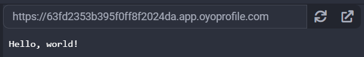
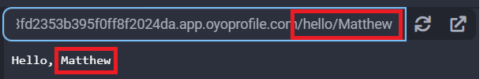

Uvicorn
Uvicorn is an ASGI web server implementation for Python. It allows for hosting an ASGI server and serving requests. It is highly recommended that uvicorn be used together with an ASGI framework library, like Starlette.
Examples
Standalone Uvicorn Hello World
We can run a simple web server that has an index page which returns "Hello, World!" when visited:
import uvicorn
async def app(scope, receive, send):
assert scope['type'] == 'http'
await send({
'type': 'http.response.start',
'status': 200,
'headers': [
[b'content-type', b'text/plain'],
],
})
await send({
'type': 'http.response.body',
'body': b'Hello, world!',
})
if __name__ == "__main__":
# host must be 0.0.0.0 to work in the Python3 Editor
uvicorn.run('main:app', host='0.0.0.0', port=8000, log_level='info')
On the right, we will see our page:

Handling Routing
If you would like to have routing to different pages in your app, you should use an ASGI framework like Starlette, otherwise you will have to parse the scope['path'] variable and handle the different request paths yourself.
This example has an index page, and also has an extra /hello/<anything> path that acts like an echo:
import uvicorn
async def index(send):
await send({
'type': 'http.response.body',
'body': b'Index Page!',
})
async def greet(send, name):
await send({
'type': 'http.response.body',
'body': f'Hello, {name}'.encode(),
})
async def app(scope, receive, send):
assert scope['type'] == 'http'
await send({
'type': 'http.response.start',
'status': 200,
'headers': [
[b'content-type', b'text/plain'],
],
})
if scope['path'] == "/":
await index(send)
elif scope['path'].startswith("/hello/"):
await greet(send, scope['path'][7:])
if __name__ == "__main__":
# host must be 0.0.0.0 to work in the Python3 Editor
uvicorn.run('main:app', host='0.0.0.0', port=8000, log_level='info')
Then, if we visit the /hello/<anything> endpoint, we will get this output:

Reference
- Uvicorn at uvicorn.org